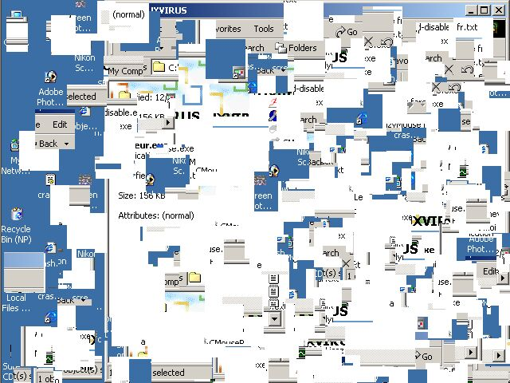
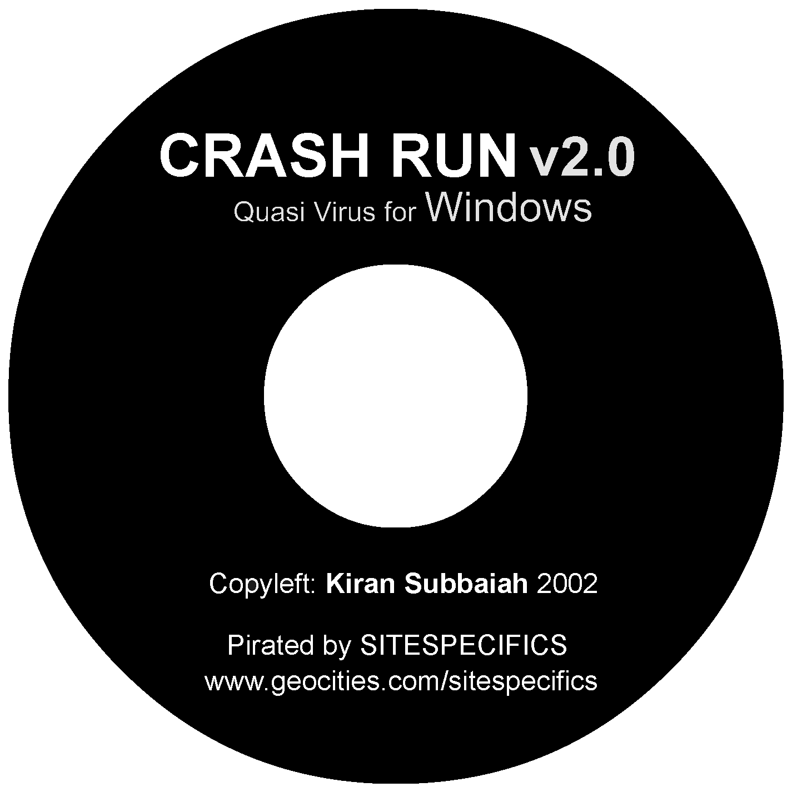
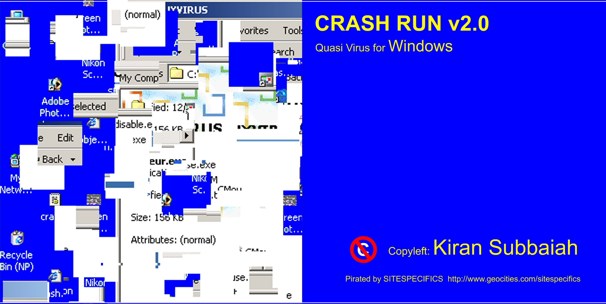
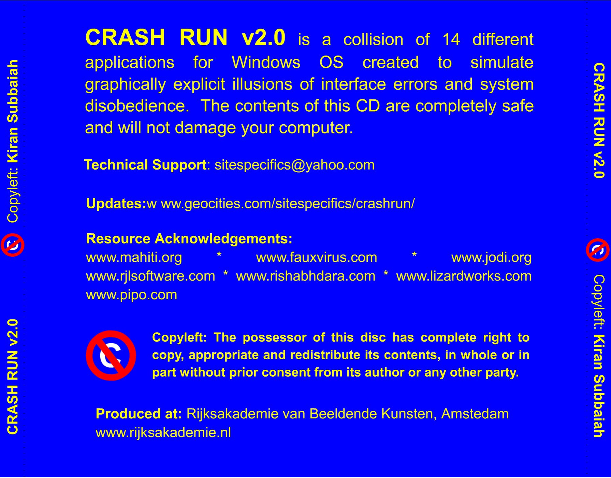

Description:
CRASH RUN is an amusing simulator of system and interface crashing that reminds us of those horrifying moments when we helplessly watch our beloved hard-disc going mad. In this piece Kiran Subbaiah uses screensavers, desktop utilities and prank programmes to make the user believe that his/her system is in the process of no return and creates moments of surprise when he/she instinctively tries to intervene into the collapse by interacting. CRASH RUN is a critique on the perception of interface as a flat entity.
Natasa Petresin
Download:
CRASH_RUN.EXE (V1)
CRASH_RUN.ZIP (V2)
For Win OS 98<
Save changes and quit applications before launching CRASH RUN.
Date of release: D:022/M:06/Y:2002
Last up date: D:06/M:08/Y:2002
Proprietary Status: Copyleft
Produced at: www.rijksakademie.nl
Also featured at RHIZOME Art Base
Screenshot:

CD Print Media:



|